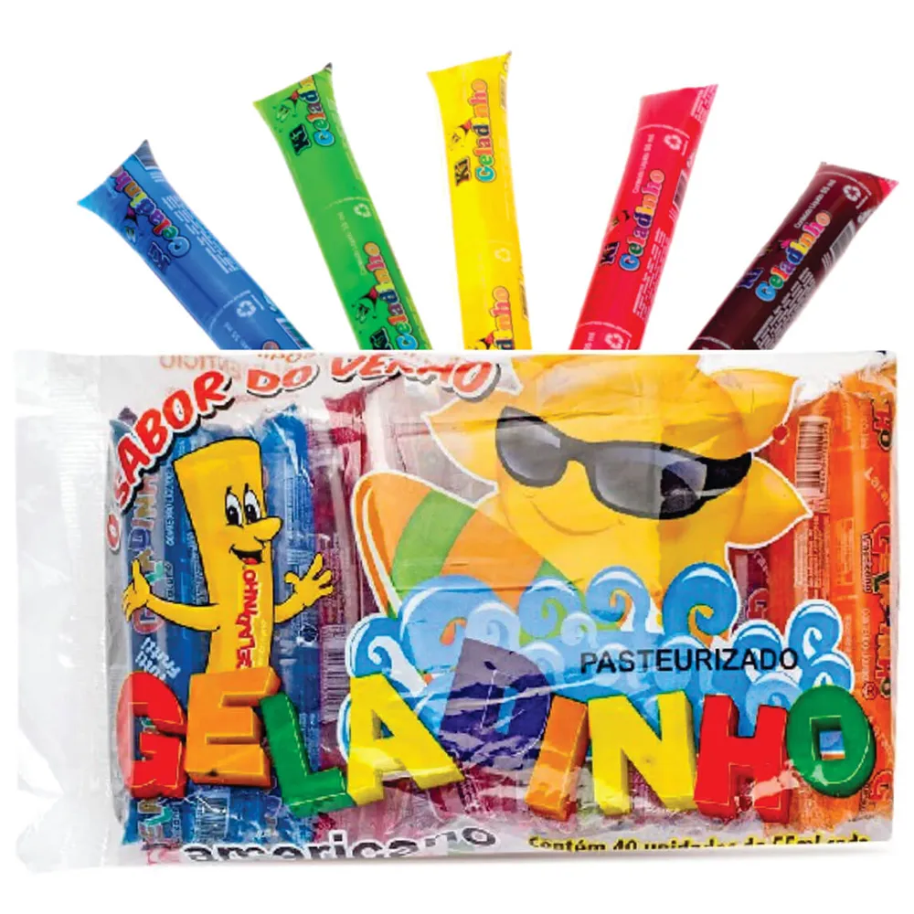

Soluções Técnicas para Produção de Refrescos
- Avaliação Processamento e Pasteurização
- Tecnologia de pasteurização a Placas e Tubular
- Formulações balanceadas de acordo com ingredientes permitidos pela legislação
- Metodologias de rastreamento de lotes/
- Elaboração de documentos em Boas Práticas de Produção/
- Estudo de viabilidade do melhor tipo de embalagem para o produto
Consultoria Especializada